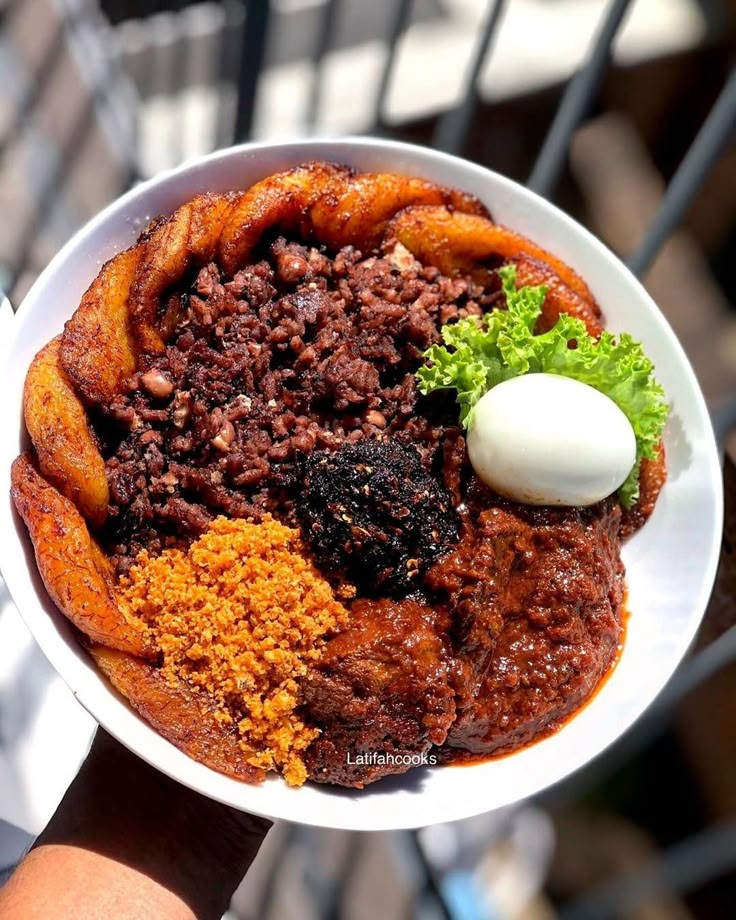

Our Menu
| Cuisine Name | Description | Price per Person |
|---|---|---|
|
Chicken Feet Curry 
|
Tender chicken feet slow-cooked in a rich, mildly spiced curry sauce, served with steamed rice or pap. | £12.99 |
|
Nigerian Jollof Rice & Chicken 
|
Smoky tomato jollof rice served with grilled or fried chicken, salad, and fried plantain. | £14.99 |
|
Plantain & Chicken Curry Sauce .jpg)
|
Sweet fried plantains served with tender chicken in a creamy, flavourful curry sauce and a side of rice. | £13.99 |
|
Waakye  |
Traditional Ghanaian rice and beans served with beef, boiled egg, spaghetti, fried plantain, salad, shito (black pepper sauce), and your choice of meat or fish. | £15.99 |
|
Sebon Khady 
|
A fragrant Senegalese-style rice dish served with seasoned chicken, mixed vegetables, and a rich tomato-based sauce. | £16.99 |
|
Moroccan Chicken Rfissa 
|
Shredded trid (thin flatbread) topped with slow-cooked chicken, lentils, onions, and aromatic Moroccan spices in a savoury broth. | £17.99 |
|
Egyptian Hawawshi 
|
Crispy pita bread stuffed with seasoned minced beef, onions, herbs, and spices, served with chips and a fresh salad. | £13.49 |